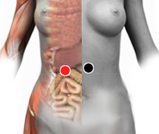

Distensión abdominal
Pares
estómago - duodeno
duodeno - duodeno
contraciego - contraciego

Generalidades:
La distensión o inflamación abdominal se puede deber a múltiples causas:
El medicamento para la diabetes acarbosa, al igual que cualquier medicamento que contenga lactulosa o sorbitol, puede causar distensión.
También puede ser causada por la ascitis, que es la acumulación de líquido en el peritoneo, a su vez causada por trastornos hepáticos: hepatitis, hígado graso, alcoholismo o por insuficiencia cardiaca congestiva.